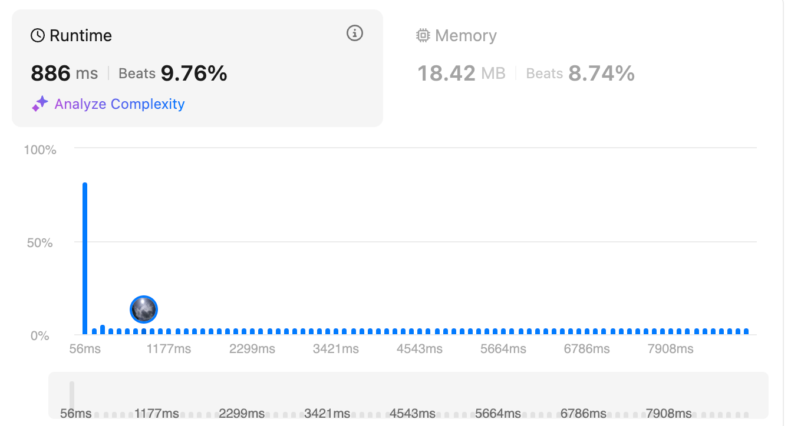
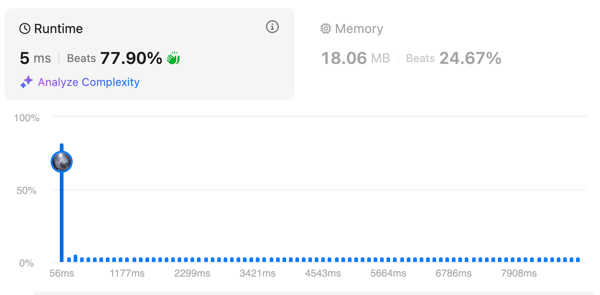
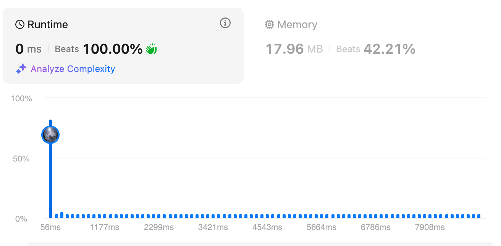

LeetCode 10: [Hard] Regular Expression Matching
Problem Overview
Regular Expression Matching is a fascinating pattern matching challenge that tests our ability to handle complex string patterns. Let's dive into this puzzle!
Problem Constraints
1 <= s.length <= 20
1 <= p.length <= 20
s contains only lowercase English letters
p contains only lowercase English letters, '.', and '*'
It is guaranteed for each appearance of the character '*', there will be a previous valid character to match.
The Journey to an Optimal Solution
Let's explore different approaches to solve this problem, starting from a basic solution and gradually optimizing it. Each solution brings something unique to the table!
Key Element of the Solution
The most important feature used in the solution is the ability to handle patterns like p = "a*" + q, where q is another regular expression. This can be divided into two cases:
'a*'means zero or more 'a's, which translates to:
Here, the first part assumes "a" means zero occurrences, while the second part assumes "a" means one or more occurrences, allowing us to reduce 'a' from s.
The key idea of the following solution is based on this observation.
Solution 1: Recursive Approach with Pattern Matching [time limit exceed]
Our first solution takes a recursive approach, breaking down the pattern matching problem into smaller subproblems. Think of it like a tree where each level represents a character match decision.
Key features:
- Handle '.' as a wildcard character
- Special handling for '*' pattern
- Recursive pattern matching
def isMatch(self, text: str, pattern: str) -> bool:
if not pattern:
return not text
first_match = bool(text) and pattern[0] in {text[0], "."}
if len(pattern) >= 2 and pattern[1] == "*":
return (self.isMatch(text, pattern[2:]) or # zero occurrence
(first_match and self.isMatch(text[1:], pattern))) # multiple occurrences
else:
return first_match and self.isMatch(text[1:], pattern[1:])
This solution works by:
- Checking base cases first
- Handling '*' pattern with two possibilities
- Using recursion to break down the problem
- Matching characters one by one
This approach, however, may exceed time limits for large inputs.
Solution 2: With Optimization of Edge Cases [beat 9.76%]

This solution improves upon the recursive approach by handling edge cases more efficiently. Let's break down how it works!
Key Optimizations:
- Special handling for patterns of length ≤ 2
- Early returns for common edge cases
- Pattern reduction for longer strings
- Smart handling of empty strings
While this solution improves upon the basic recursive approach by handling edge cases efficiently, it still has room for optimization, as shown in our later solutions with dynamic programming and smart pattern reduction.
Solution 3: Dynamic Programming Optimization [beat 77.9%]

In our second solution, we made a key optimization using dynamic programming. This dramatically improves performance by avoiding redundant calculations!
Key improvements:
- Added memoization for subproblems
- Bottom-up DP approach
- Efficient state transitions
def isMatch(self, s: str, p: str) -> bool:
dp = [[False] * (len(p) + 1) for _ in range(len(s) + 1)]
dp[0][0] = True
# Handle patterns like a*, a*b*, a*b*c* for empty string
for j in range(2, len(p) + 1):
if p[j-1] == '*':
dp[0][j] = dp[0][j-2]
for i in range(1, len(s) + 1):
for j in range(1, len(p) + 1):
if p[j-1] == '*':
dp[i][j] = dp[i][j-2] or (dp[i-1][j] and p[j-2] in {s[i-1], '.'})
else:
dp[i][j] = dp[i-1][j-1] and (p[j-1] == s[i-1] or p[j-1] == '.')
return dp[len(s)][len(p)]
Solution 4: Smart Pattern Reduction [beat 100%]

class Solution3:
"""combine dp method and some edge condition"""
def isMatch(self, s: str, p: str) -> bool:
# reduce normal char prefix and surfix
n = len(p)
while True:
if len(p)<=2:
return self.solve_edge_case(s,p)
out= self.reduce_normal_char_prefix_surfix(s, p)
if isinstance(out, bool):
return out
else:
s, p = out
if len(p) == n: # cannot reduce anymore
break
else:
n = len(p)
if "*" not in p and "." not in p:
return self.is_match_no_star_and_dot(s,p)
if "*" not in p:
return self.is_match_only_dot(s,p)
return self.dp_solution(s, p)
def reduce_normal_char_prefix_surfix(self, s, p):
if p[0]=="*": # removed *a, **, *.
raise ValueError("p[0] cannot be *")
if p[0] == "." and p[1] !="*":
if s=="":
return False
s = s[1:]
p = p[1:] # removed .a, ..
# left [aa, a*, a., .*,]
if p[0] not in '.*' and p[1]!="*":
if s=="":
return False
if p[0]!=s[0]:
return False
else:
s = s[1:]
p = p[1:]
# remove aa, a.
# left [a*, .*]
# consider last two # all possible [aa, a*, a., .a, .*,.., *a, **, *.]
if "**" in p:
raise ValueError("Cannot have ** in p")
if p[-1] not in '.*':
if len(s)<1 or p[-1]!=s[-1]:
return False
else:
s = s[:-1]
p = p[:-1]
# remove .a, *a, aa
if p[-1] == ".":
if s=="":
return False
s = s[:-1]
p = p[:-1]
# remove a., *., ..
# left [a*, ,.*]
return s, p
def is_match_only_dot(self, s,p):
# p only contains .
if len(p)==len(s):
for si,pi in zip(s,p):
if pi != "." and pi != si:
return False
return True
return False
def is_match_no_star_and_dot(self,s,p):
return s==p
def solve_edge_case(self, s,p):
assert len(p)<=2, "only for case len(p)<=2, len(p)={} , s={}, p={}".format(len(p),s,p)
if len(p)==0:
return len(s)==0
if len(p)==1:
return len(s)==1 and (s==p or p==".")
if len(p)==2: #
if p[0]==".":
if p == ".*":
return True
elif p=="..":
return len(s)==2
else:
return len(s)==len(p) and s[1]==p[1]
elif p[0]=="*":
raise Exception("There should be a previous valid char")
else: # p[0]=a
if p[1]==".": # p = a.
return len(s)>=1 and s[0]==p[0] and len(s)==2
elif p[1]=="*": #p= a*, s must be aaaaa
# empty string or s[0]==p[0], s[i]==s[0] for all i
return s=="" or set(s).issubset(set(p[:1]))
else: # p=aa
return s==p
return False
def dp_solution(self, s, p):
dp = [[False] * (len(p) + 1) for _ in range(len(s) + 1)]
dp[0][0] = True # 0,0 if s[:n], p[:n]
for j in range(2, len(p) + 1):
if p[j-1] == '*':
dp[0][j] = dp[0][j-2]
for i in range(1, len(s) + 1):
for j in range(1, len(p) + 1):
if p[j-1] == '*':
dp[i][j] = dp[i][j-2] or (dp[i-1][j] and p[j-2] in {s[i-1], '.'})
else:
dp[i][j] = dp[i-1][j-1] and p[j-1] in {s[i-1], '.'}
return dp[len(s)][len(p)]
Pattern Reduction Strategy
Just like solving a puzzle, we first simplify our pattern by:
- Trimming matching characters from both ends
- Handling simple patterns immediately
- Quick-returning obvious matches/mismatches
Let's see how trimming works with some examples:
1️⃣ Example 1: Trimming from Left
s = "abcdef"
p = "abc.*f"
# First, we see 'abc' matches exactly at the start
# After trimming left:
s = "def"
p = ".*f"
2️⃣ Example 2: Trimming from Right
s = "aaabbb"
p = "a*bbb"
# 'bbb' matches exactly at the end
# After trimming right:
s = "aaa"
p = "a*"
3️⃣ Example 3: Both Ends
s = "abcdefabc"
p = "abc.*abc"
# 'abc' matches at both ends
# After trimming both ends:
s = "def"
p = ".*"
4️⃣ Early Return Cases
# Case 1: Pattern starts with mismatched character
s = "abc"
p = "bbc"
→ Return False immediately (first char mismatch)
# Case 2: Empty string with non-empty pattern
s = ""
p = "abc"
→ Return False immediately (can't match fixed chars)
# Case 3: Pattern reduces to exact match
s = "abc"
p = "abc"
→ Return True immediately (exact match)
The reduce_normal_char_prefix_surfix function handles all these cases efficiently:
- Checks for invalid patterns (like starting with '*')
- Trims matching characters from left to right
- Trims matching characters from right to left
- Returns early if a mismatch is found
- Returns the reduced strings if more processing is needed
Performance Magic
This solution is like a Swiss Army knife , equipped with:
- Early Termination
- Catches impossible matches instantly
-
Handles simple cases without heavy computation
-
Pattern Reduction
- Makes the problem smaller and simpler
-
Handles edge cases like a boss
-
Smart Classification
- Uses the right tool for each job
- Only uses DP when absolutely necessary
Example Walkthrough
Let's see the magic in action:
Input: s = "aabcc", p = "a*b*c*"
Step 1: Pattern Reduction
- Can't reduce (all special patterns)
Step 2: Classification
- Contains '*', use DP solution
Step 3: Magic Happens
- DP table builds efficiently
- Match found!
This solution is like a well-oiled machine :
- Fast for simple cases
- Smart with complex patterns
- Efficient memory usage
Time Complexity Analysis
Let's break down the complexity of our solutions:
- Recursive Solution: Exponential time complexity due to repeated subproblem calculations
- Dynamic Programming Solution: O(m*n) with optimizations:
- Early pruning
- State reuse
- Efficient transitions
Key Takeaways
- Pattern Recognition is crucial for performance
- Dynamic Programming can significantly reduce time complexity
- Edge Cases need special attention
- Space-Time Tradeoffs are important considerations
Practice Tips
- Start with simple patterns like "a" and "."
- Practice with different combinations of patterns
- Test edge cases carefully
- Compare recursive vs DP approaches
Related Problems
Want to master pattern matching and string manipulation? Here are some related LeetCode problems to practice:
Basic Pattern Matching
- Wildcard Matching (Hard)
- Similar to regex but with simpler rules
-
Good starting point for pattern matching
-
Implement strStr() (Easy)
- Basic string matching
- Foundation for more complex patterns
Advanced Pattern Matching
- Valid Number (Hard)
- Complex pattern validation
-
Multiple edge cases to handle
-
Basic Calculator (Hard)
- Expression pattern matching
- Stack-based solution
String Manipulation
- String to Integer (atoi) (Medium)
- Pattern recognition
-
Edge case handling
-
Parse Lisp Expression (Hard)
- Complex pattern parsing
- Recursive solution
Problem-Solving Tips for Pattern Matching
- Always start with simple patterns first
- Break down complex patterns into smaller parts
- Consider using dynamic programming for optimization
- Handle edge cases explicitly
- Test with various input combinations
Keep practicing these problems to build a strong foundation in pattern matching and string manipulation!